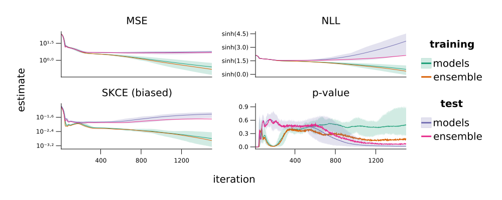

Friedman regression problem

You are seeing the HTML output generated by Documenter.jl and Literate.jl from the Julia source file. The corresponding notebook can be viewed in nbviewer, and the plain script output can be found here.
If you want to run the experiments, make sure you have an identical environment. Please use Julia 1.5.3 and activate and instantiate the environment using this Project.toml file and this Manifest.toml file.
The Github repository contains more detailed instructions and a nix project environment with a pinned Julia binary for improved reproducibility.
Packages
using Arrow
using CairoMakie
using CalibrationErrors
using CalibrationErrorsDistributions
using CalibrationTests
using CSV
using DataFrames
using Distributions
using Flux
using ProgressLogging
using Query
using Roots
using Showoff
using Random
using CairoMakie.AbstractPlotting.ColorSchemes: Dark2_8
using Logging: with_logger
using TerminalLoggers: TerminalLogger
# set random seed
Random.seed!(1234)
# create path before saving and
# use a different line join style to avoid visually irritating and incorrect values
function wsavefig(file, fig::Figure=current_figure())
mkpath(dirname(file))
scene = CairoMakie.AbstractPlotting.get_scene(fig)
ext = lowercase(replace(splitext(file)[2], "." => ""))
screen = CairoMakie.CairoScreen(scene, file, Symbol(ext))
CairoMakie.Cairo.set_line_join(screen.context, CairoMakie.Cairo.CAIRO_LINE_JOIN_BEVEL)
CairoMakie.cairo_draw(screen, scene)
CairoMakie.Cairo.finish(screen.surface)
return screen
end
# define progress logging frontend
const PROGRESSLOGGER = TerminalLogger()
# define non-intrusive plotting style
set_theme!(
Theme(;
Axis=(
rightspinevisible=false,
topspinevisible=false,
xgridvisible=false,
ygridvisible=false,
),
Legend=(framevisible=false,),
),
)Regression problem
We study the so-called Friedman 1 regression problem, which was initially described for 200 inputs in the six-dimensional unit hypercube and later modified to 100 inputs in the 10-dimensional unit hypercube. In this regression problem real-valued target $Y$ depends on input $X$ via
\[Y = 10 \sin{(\pi X_1 X_2)} + 20 (X_3 − 0.5)^2 + 10 X_4 + 5 X_5 + \epsilon,\]
where noise $\epsilon$ is typically chosen to be independently standard normally distributed. We generate a training data set of 100 inputs distributed uniformly at random in the 10-dimensional unit hypercube and corresponding targets with identically and independently distributed noise following a standard normal distribution.
friedman1(x) = 10 * sinpi(x[1] * x[2]) + 20 * (x[3] - 1//2)^2 + 10 * x[4] + 5 * x[5]
function sample_data(n::Int)
# sample inputs
xs = rand(10, n)
# sample targets
ys = map(eachcol(xs)) do x
return friedman1(x) + randn()
end
return xs, ys
end
Random.seed!(100)
train_data = sample_data(100);For the evaluation of the models we use another data set of 50 samples that is sampled according to the same law.
Random.seed!(200)
test_data = sample_data(50);Model
We consider models $P^{(\theta,\sigma^2)}$ of normal distributions with fixed variance
\[P^{(\theta,\sigma^2)}(Y | X = x) = \mathcal{N}(f_{\theta}(x), \sigma^2),\]
where $f_{\theta}(x)$, the model of the mean of the distribution $\mathbb{P}(Y|X = x)$, is given by a fully connected neural network with two hidden layers with 200 and 50 hidden units and ReLU activation functions. The parameters of the neural network are denoted by $\theta$.
# `Float64` version of `Flux.glorot_uniform`
function glorot_uniform(nout::Int, nin::Int)
return (rand(nout, nin) .- 0.5) .* sqrt(24 / (nout + nin))
end
# neural network model
function nn_model()
# initial parameters
f = Chain(
Dense(10, 200, relu; initW=glorot_uniform, initb=zeros),
Dense(200, 50, relu; initW=glorot_uniform, initb=zeros),
Dense(50, 1; initW=glorot_uniform, initb=zeros),
vec,
)
σ = Random.randexp()
return f, σ
endnn_model (generic function with 1 method)
Training
We use a maximum likelihood approach and train the parameters $\theta$ of the model for 5000 iterations by minimizing the mean squared error on the training data set using ADAM. In each iteration, the variance $\sigma^2$ is set to the maximizer of the likelihood of the training data set.
We train 10 models for each combination of regression problem and model category, and compute the predicted distributions on the training and test data sets in each iteration step.
The initial values of the weight matrices of the neural networks are sampled from the uniform Glorot initialization and the offset vectors are initialized with zeros. The model parameters are learnt by iteratively minimizing the negative log-likelihood on the training data set. The parameters of the neural networks are trained by gradient descent with the Adam optimization algorithm (default settings in Flux.jl), and in each iteration step the variance parameter of the predicted Gaussian distributions is set to the optimal value with respect to the negative log-likelihood on the training data set.
function train(id, (train_xs, train_ys), (test_xs, _))
# check if file exists
filename = joinpath("data", "friedman", "predictions_id=$(id).arrow")
isfile(filename) && return nothing
# compute the predictions of the initial neural network
f, σ = nn_model()
train_μs = f(train_xs)
test_μs = f(test_xs)
# save the initial model and its predictions
niters = 5000
train_μss = Vector{typeof(train_μs)}(undef, niters + 1)
test_μss = Vector{typeof(test_μs)}(undef, niters + 1)
σs = Vector{typeof(σ)}(undef, niters + 1)
train_μss[1] = train_μs
test_μss[1] = test_μs
σs[1] = σ
# train with ADAM
params = Flux.Params(Flux.params(f))
opt = ADAM()
@progress name = "training (id = $id)" for i in 2:(niters + 1)
# compute gradients
gradients = gradient(params) do
return Flux.Losses.mse(f(train_xs), train_ys)
end
# update the parameters
Flux.Optimise.update!(opt, params, gradients)
# update the variance
yhats = f(train_xs)
σ = sqrt(Flux.Losses.mse(yhats, train_ys))
# save the model and its predictions
train_μss[i] = yhats
test_μss[i] = f(test_xs)
σs[i] = σ
end
# save the predictions
mkpath(dirname(filename))
Arrow.write(filename, (train_μs=train_μss, test_μs=test_μss, σ=σs))
return nothing
end
Random.seed!(100)
for (id, seed) in enumerate(rand(UInt, 10))
@info "training NN model: run $id"
Random.seed!(seed)
with_logger(PROGRESSLOGGER) do
train(id, train_data, test_data)
end
end[ Info: training NN model: run 1 [ Info: training NN model: run 2 [ Info: training NN model: run 3 [ Info: training NN model: run 4 [ Info: training NN model: run 5 [ Info: training NN model: run 6 [ Info: training NN model: run 7 [ Info: training NN model: run 8 [ Info: training NN model: run 9 [ Info: training NN model: run 10
Evaluations
We estimate the average negative log-likelihood (NLL) and the mean squared error (MSE). Additionally, we estimate the average pinball loss
\[\frac{1}{n_\tau} \sum_{i=1}^{n_\tau} \mathbb{E}_{X,Y} L_{\tau_i}\big(Y, \mathrm{quantile}(P_X,\tau_i)\big)\]
for quantile levels $\tau_i = 0.05i$ ($n_\tau = 19$), where $L_\tau(y, \tilde{y}) = (1 - \tau) (\tilde{y} - y)_{+} + \tau (y - \tilde{y})_{+}$ for observation $y$ and prediction $\tilde{y}$, and $\mathrm{quantile}(P_x, \tau) = \inf_y \{P_x(Y \leq y) \geq \tau\}$ for quantile level $\tau \in [0, 1]$.
function pinball_loss(level::Real, y::Real, quantile::Real)
δ = quantile - y
return ((δ > 0) - level) * δ
end
function mean_pinball_loss(prediction, y)
levels = 0.05:0.05:0.95
return mean(pinball_loss(τ, y, quantile(prediction, τ)) for τ in levels)
endmean_pinball_loss (generic function with 1 method)
Moreover, we estimate the squared kernel calibration error (SKCE) and the p-value of the null hypothesis that the model is calibrated. for calibration on the training and test data set for every model and every iteration.
function evaluate_models(dataset, id, ys)
# output file
out = joinpath("data", "friedman", "statistics_id=$(id)_dataset=$(dataset).csv")
isfile(out) && return nothing
# load data
filename = joinpath("data", "friedman", "predictions_id=$(id).arrow")
isfile(filename) || error("predictions for run ", id, " not found")
tbl = Arrow.Table(filename)
σs = tbl.σ
μss = getproperty(tbl, Symbol(dataset, :_μs))
predictionss = map(μss, σs) do μs, σ
return map(μs) do μ
return Normal(μ, σ)
end
end
# define kernel
kernel = WassersteinExponentialKernel() ⊗ SqExponentialKernel()
return evaluate_stats(out, predictionss, ys, kernel)
end
function evaluate_stats(file, predictionss, ys, kernel)
mkpath(dirname(file))
open(file, "w") do f
# print headers
println(f, "iteration,statistic,estimate")
@progress name = "iterations" for (i, predictions) in enumerate(predictionss)
# average NLL
nll = -mean(map(logpdf, predictions, ys))
println(f, i - 1, ",NLL,", nll)
# mean squared error
mse = Flux.Losses.mse(map(mean, predictions), ys)
println(f, i - 1, ",MSE,", mse)
# pinball loss
pinball = mean(map(mean_pinball_loss, predictions, ys))
println(f, i - 1, ",pinball,", pinball)
# unbiased estimator of SKCE
unbiased_estimator = UnbiasedSKCE(kernel)
skce = calibrationerror(unbiased_estimator, predictions, ys)
println(f, i - 1, ",SKCE (unbiased),", skce)
# biased estimator of SKCE
biased_estimator = BiasedSKCE(kernel)
skce = calibrationerror(biased_estimator, predictions, ys)
println(f, i - 1, ",SKCE (biased),", skce)
# p-value
test = AsymptoticSKCETest(kernel, predictions, ys)
p = pvalue(test; bootstrap_iters=1_000)
println(f, i - 1, ",p-value,", p)
end
end
return nothing
end
Random.seed!(300)
for (id, seed) in enumerate(rand(UInt, 10))
# evaluate models on training data set
@info "evaluating training statistics: run $id"
Random.seed!(seed)
with_logger(PROGRESSLOGGER) do
evaluate_models("train", id, train_data[2])
end
# evaluate models on test data set
@info "evaluating test statistics: run $id"
Random.seed!(seed)
with_logger(PROGRESSLOGGER) do
evaluate_models("test", id, test_data[2])
end
end[ Info: evaluating training statistics: run 1 [ Info: evaluating test statistics: run 1 [ Info: evaluating training statistics: run 2 [ Info: evaluating test statistics: run 2 [ Info: evaluating training statistics: run 3 [ Info: evaluating test statistics: run 3 [ Info: evaluating training statistics: run 4 [ Info: evaluating test statistics: run 4 [ Info: evaluating training statistics: run 5 [ Info: evaluating test statistics: run 5 [ Info: evaluating training statistics: run 6 [ Info: evaluating test statistics: run 6 [ Info: evaluating training statistics: run 7 [ Info: evaluating test statistics: run 7 [ Info: evaluating training statistics: run 8 [ Info: evaluating test statistics: run 8 [ Info: evaluating training statistics: run 9 [ Info: evaluating test statistics: run 9 [ Info: evaluating training statistics: run 10 [ Info: evaluating test statistics: run 10
Ensembles
We create an ensemble of models from the trained models by combining models at each training iteration.
We evaluate the same statistics as for the individual ensemble members above. Since the quantiles of a Gaussian mixture model are not available in a closed-form expression, we use a bisection algorithm.
# see https://github.com/JuliaStats/Distributions.jl/pull/1195
function Distributions.quantile(dist::UnivariateMixture{Continuous}, level::Real)
ps = probs(dist)
bracket = extrema(
quantile(component(dist, i), level) for (i, pi) in enumerate(ps) if pi > 0
)
return find_zero(bracket) do x
cdf(dist, x) - level
end
end
function evaluate_ensembles(dataset, ys)
# output file
out = joinpath("data", "friedman", "statistics_ensembles_dataset=$(dataset).csv")
isfile(out) && return nothing
# load data
tables = map(1:10) do id
file = joinpath("data", "friedman", "predictions_id=$(id).arrow")
isfile(file) || error("predictions for run ", id, " not found")
return Arrow.Table(file)
end
nmodels = length(first(tables).σ)
nsamples = length(ys)
μs = Symbol(dataset, :_μs)
predictionss = map(1:nmodels) do i
map(1:nsamples) do j
MixtureModel(
map(tables) do table
Normal(getproperty(table, μs)[i][j], table.σ[i])
end,
)
end
end
# kernel
kernel = MixtureWassersteinExponentialKernel() ⊗ SqExponentialKernel()
return evaluate_stats(out, predictionss, ys, kernel)
end
# evaluate ensembles on training data set
@info "evaluating training statistics: ensembles of runs 1:10"
Random.seed!(400)
with_logger(PROGRESSLOGGER) do
evaluate_ensembles("train", train_data[2])
end
# evaluate ensembles on test data set
@info "evaluating test statistics: ensembles of runs 1:10"
Random.seed!(500)
with_logger(PROGRESSLOGGER) do
evaluate_ensembles("test", test_data[2])
end[ Info: evaluating training statistics: ensembles of runs 1:10 [ Info: evaluating test statistics: ensembles of runs 1:10
Visualization
We visualize the resulting estimates by overlaying them with the estimates of the individual models.
function logtickformat(base::Int)
function format(values)
return map(Base.Fix2(logformat, base), showoff(values))
end
return format
end
function logformat(digits::String, base::Int)
buf = IOBuffer()
print(buf, base)
for c in digits
if '0' ≤ c ≤ '9'
print(buf, Showoff.superscript_numerals[c - '0' + 1])
elseif c == '-'
print(buf, '⁻')
elseif c == '.'
print(buf, '·')
end
end
return String(take!(buf))
end
function asinhtickformat(factor)
function format(values)
return "sinh(" .* showoff(values ./ factor) .* ")"
end
return format
end
function plot_statistic!(ax::Axis, iterations, statistic; transform=identity)
# load and filter statistics
models_df = mapreduce(vcat, Iterators.product(1:10, ("train", "test"))) do (id, dataset)
file = joinpath("data", "friedman", "statistics_id=$(id)_dataset=$(dataset).csv")
df = @from i in DataFrame(CSV.File(file)) begin
@where i.statistic == statistic && i.iteration in iterations
@select i
@collect DataFrame
end
df[!, :dataset] .= dataset
return df
end
sort!(models_df, :iteration)
ensembles_df = mapreduce(vcat, ("train", "test")) do dataset
file = joinpath("data", "friedman", "statistics_ensembles_dataset=$(dataset).csv")
df = @from i in DataFrame(CSV.File(file)) begin
@where i.statistic == statistic && i.iteration in iterations
@select i
@collect DataFrame
end
df[!, :dataset] .= dataset
return df
end
sort!(ensembles_df, :iteration)
# plot evaluations
for (j, dataset) in enumerate(("train", "test"))
# models
if !isempty(models_df)
models = @from i in models_df begin
@where i.dataset == dataset
@orderby i.iteration
@group i by i.iteration into g
@select {
iteration = key(g),
mean = transform(mean(g.estimate)),
min = transform(minimum(g.estimate)),
max = transform(maximum(g.estimate)),
}
@collect DataFrame
end
color = Dark2_8[2 * j - 1]
band!(ax, models.iteration, models.min, models.max; color=(color, 0.2))
lines!(ax, models.iteration, models.mean; color=color)
end
# ensembles
if !isempty(ensembles_df)
ensembles = @from i in ensembles_df begin
@where i.dataset == dataset
@orderby i.iteration
@select {i.iteration, estimate = transform(i.estimate)}
@collect DataFrame
end
color = Dark2_8[2 * j]
lines!(ax, ensembles.iteration, ensembles.estimate; color=color)
end
end
return ax
end
function statsplot(iterations, statistics::Matrix; kwargs...)
# create scene
nrows, ncols = size(statistics)
fig = Figure(; resolution=(500 * ncols, 200 * nrows))
# for all statistics
transforms = Dict(
"MSE" => log10,
"NLL" => asinh,
"pinball" => log10,
"SKCE (unbiased)" => x -> asinh(1000 * x),
"SKCE (biased)" => log10,
"p-value" => identity,
)
ytickformats = Dict(
"MSE" => logtickformat(10),
"NLL" => asinhtickformat(1),
"pinball" => logtickformat(10),
"SKCE (unbiased)" => asinhtickformat(1000),
"SKCE (biased)" => logtickformat(10),
"p-value" => AbstractPlotting.automatic,
)
for j in 1:ncols, i in 1:nrows
statistic = statistics[i, j]
# add axis
ax = Axis(
fig[i, j];
title=statistic,
ytickformat=ytickformats[statistic],
xticklabelsize=12.0f0,
yticklabelsize=12.0f0,
)
# plot results
plot_statistic!(ax, iterations, statistic; transform=transforms[statistic])
# hide x ticks in every column apart from bottom row
if i < nrows
hidexdecorations!(ax)
end
end
# link all x axes
axes = contents(fig[1:nrows, 1:ncols])
linkxaxes!(axes...)
# add labels
Label(fig[end + 1, 1:ncols], "iteration")
Label(fig[1:nrows, 0], "estimate"; rotation=π / 2, tellheight=false)
# tighten limits
for ax in axes
tightlimits!(ax, Left(), Right())
end
# create legend on right
elems = map(1:2:3) do i
model_color = Dark2_8[i]
ensemble_color = Dark2_8[i + 1]
return [
[
PolyElement(;
color=(model_color, 0.2),
strokewidth=0,
strokecolor=(model_color, 0.2),
),
LineElement(; color=model_color, linestyle=nothing),
],
LineElement(; color=ensemble_color, linestyle=nothing),
]
end
Legend(
fig[1:nrows, end + 1],
elems,
[["models", "ensemble"], ["models", "ensemble"]],
["training", "test"];
titlefont="Dejavu Sans Bold",
)
return fig
end
statsplot(0:5000, ["MSE" "SKCE (unbiased)"; "NLL" "SKCE (biased)"; "pinball" "p-value"])
wsavefig("figures/friedman/statsplot.svg");
statsplot(10:1500, ["MSE" "NLL"; "SKCE (biased)" "p-value"])
wsavefig("figures/friedman/statsplot_zoom.svg");
This page was generated using Literate.jl.